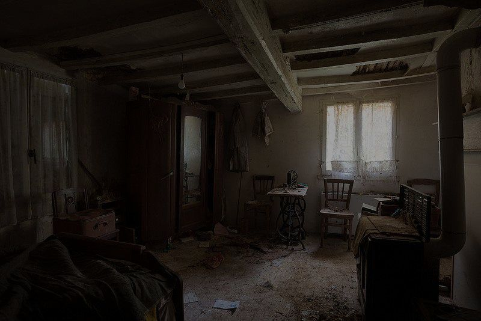
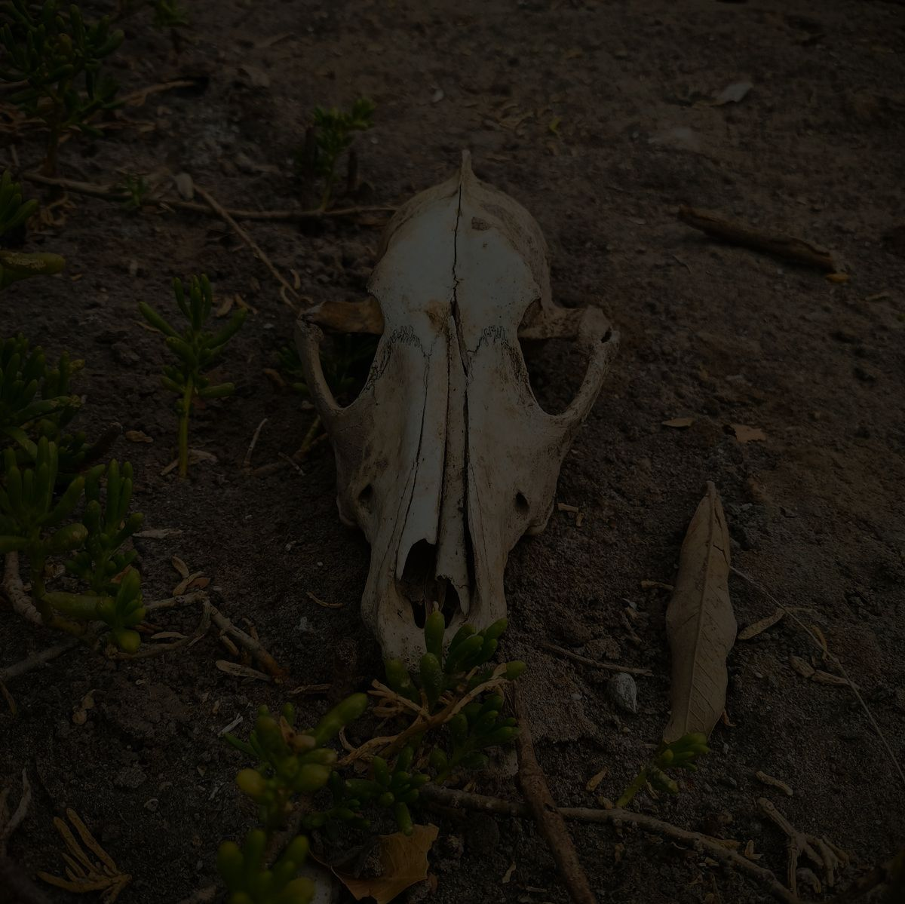
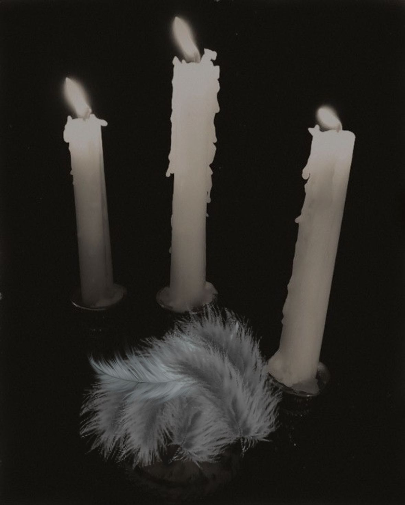
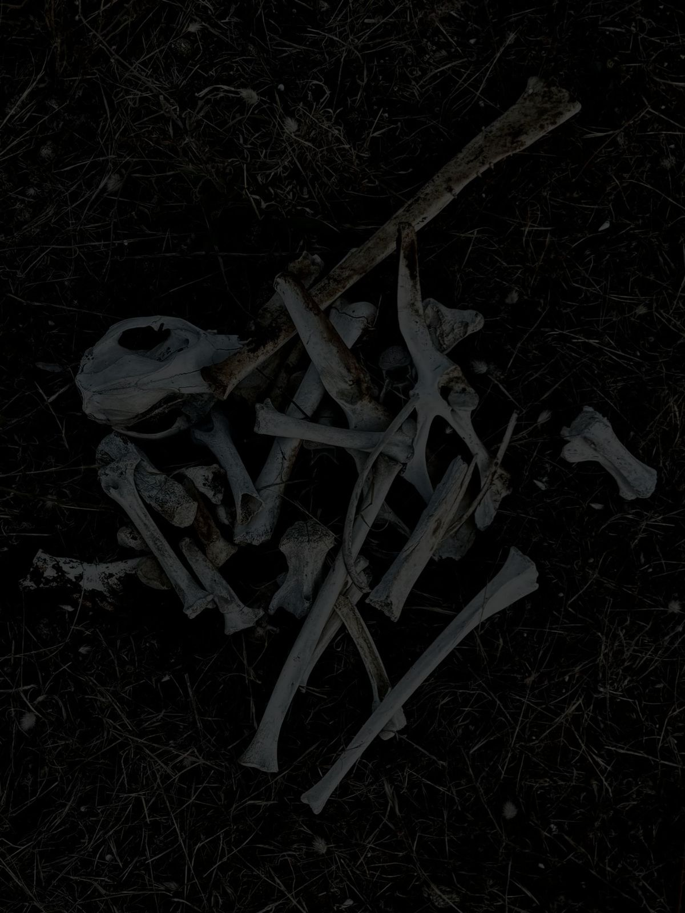
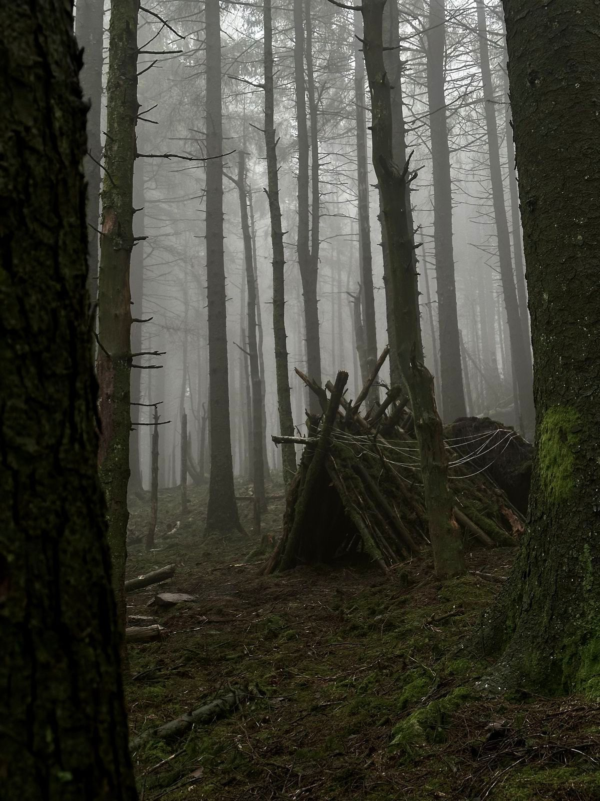
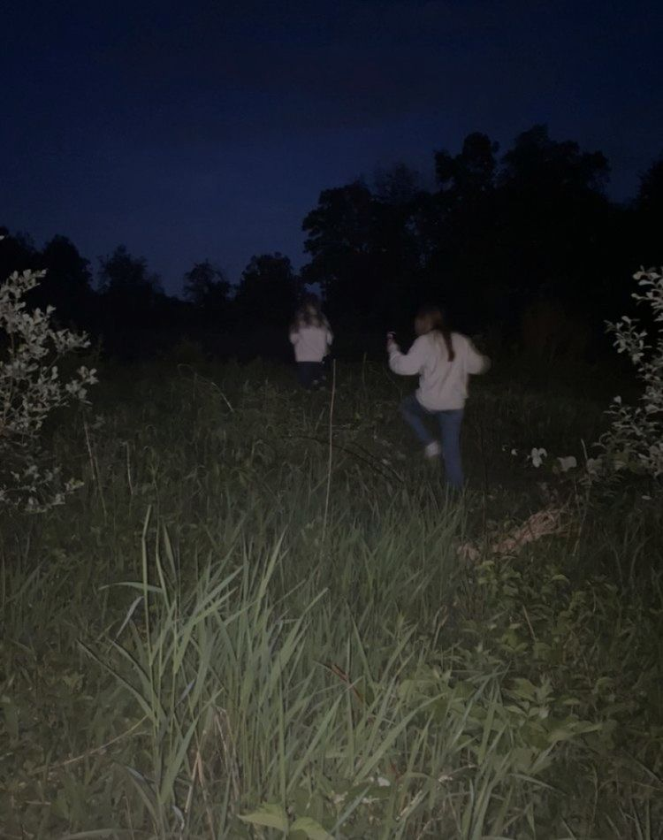
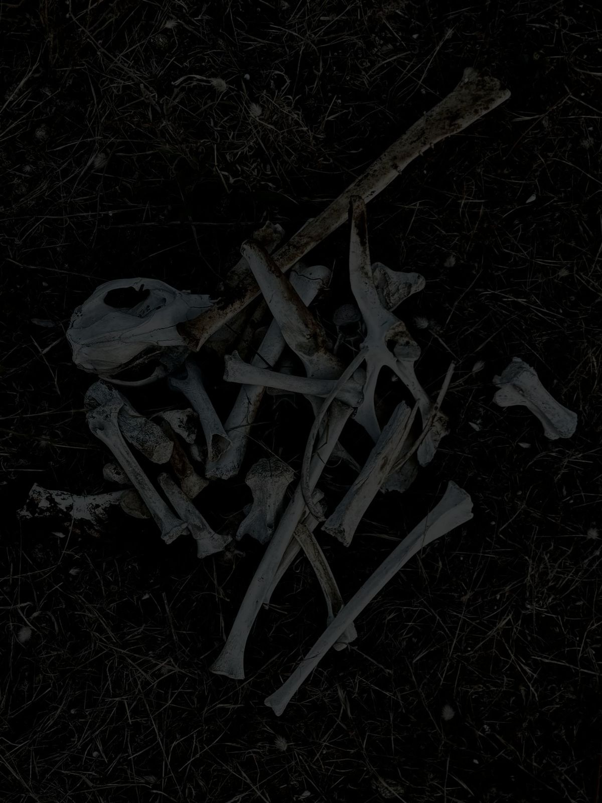
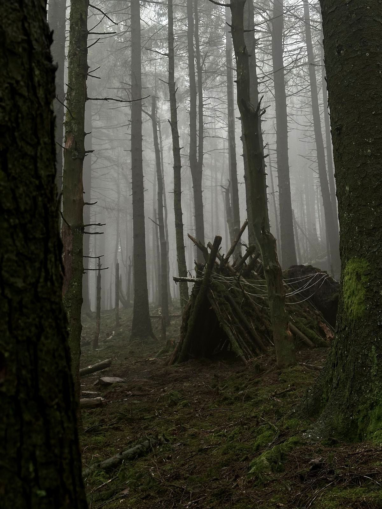
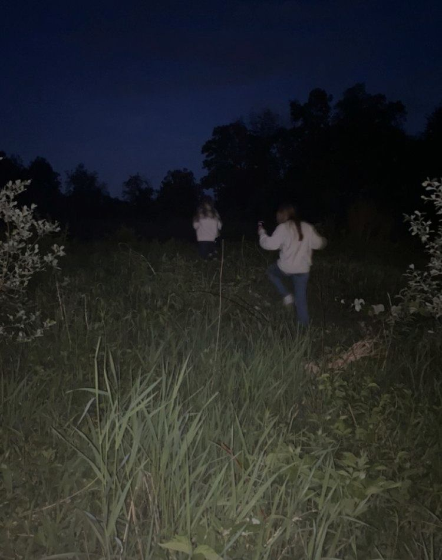

Investigar la cabaña
Mateo fue el primero en entrar, notamos como todo ahí era bastante antiguo y lleno de polvo -Es una cabaña vieja- dijo Sol
investigamos un poco más y pudimos encontrar un libro en un idioma extraño, también notamos como habían cabezas de animales de esa zona. -Esto… da miedo- dijo Abril -parece ser la casa de un antiguo cazador- respondió Noah   Investigamos un poco más y encontramos plumas de aves apiladas en una esquina junto con 2 velas blancas.  No vimos nada más así que decidimos salir de la cabaña y seguir caminando por un pequeño sendero que había ahí, en el camino pudimos notar como habían huesos apilados como si alguien los hubiera puesto ahí intencionalmente. Sentíamos que podíamos perdernos en cualquier momento ya que siendo un lugar oscuro y muy grande sería fácilmente. 
Chicos ¿Qué es eso?- preguntó Noah con una cara pálida mientras dejaba de caminar y apuntaba con su linterna.
odos miramos hacia la dirección de la linterna y podíamos ver una especie de casita hecha con ramas y un techo
de chapa junto a una cama pequeña, ademas al lado de esa casa había un círculo con unas velas al rededor. Nos asustamos
tanto que empezamos a correr por otro sendero que había justo al lado hasta que en una esquina pudimos ver una
oveja muerta pero sin cabeza, nos quedamos un momento en silencio y noté como sus caras se ponían tan pálidas
como un papel.

-¡Tenemos que irnos ya!- Dijo Abril aún asustada por la escena
-Si, sería lo mejor, tenemos que llamar a la policía- Dijo Noah
Seguimos caminando a paso rápido, casi trotando y todavía en shock por lo que habíamos visto. Cuando terminó el
sendero pudimos encontrar un guardabosques que merodeaba la zona, hablamos con él y nos dijo que allí pasaban cosas
raras, además de animales muertos de maneras muy extrañas.

Esa noche no pude dormir pensando en todo lo que vi
ese día y en lo que nos hubiera pasado si no hubieramos salido a tiempo.

Chicos ¿Qué es eso?- preguntó Noah con una cara pálida mientras dejaba de caminar y apuntaba con su linterna.
odos miramos hacia la dirección de la linterna y podíamos ver una especie de casita hecha con ramas y un techo
de chapa junto a una cama pequeña, ademas al lado de esa casa había un círculo con unas velas al rededor. Nos asustamos
tanto que empezamos a correr por otro sendero que había justo al lado hasta que en una esquina pudimos ver una
oveja muerta pero sin cabeza, nos quedamos un momento en silencio y noté como sus caras se ponían tan pálidas
como un papel.

-¡Tenemos que irnos ya!- Dijo Abril aún asustada por la escena
-Si, sería lo mejor, tenemos que llamar a la policía- Dijo Noah
Seguimos caminando a paso rápido, casi trotando y todavía en shock por lo que habíamos visto. Cuando terminó el
sendero pudimos encontrar un guardabosques que merodeaba la zona, hablamos con él y nos dijo que allí pasaban cosas
raras, además de animales muertos de maneras muy extrañas.

Esa noche no pude dormir pensando en todo lo que vi
ese día y en lo que nos hubiera pasado si no hubieramos salido a tiempo.